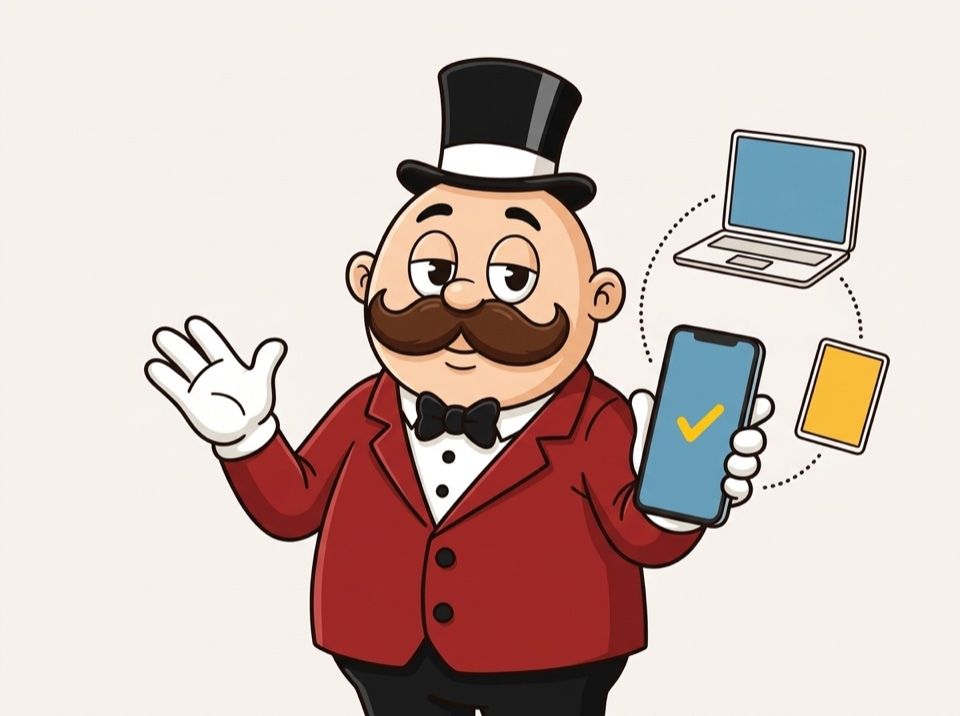

Откройте @HulianoBot
Запустите Telegram Mini App @HulianoBot. На старте сразу доступно 50 ₽ (7 дней), а по приглашению друга или промокоду — 100 ₽ (14 дней) без привязки карты.
Запустите Huliano VPN в @HulianoBot: основное и самое удобное приложение Happ настраивается автоматически в одно касание. При этом стандарт VLESS/Xray совместим и с другими популярными клиентами — Karing, OneXray, V2RayTun, Hiddify, Streisand, v2rayNG, NekoBox / Nekoray, Clash Verge и INCY.

В Huliano VPN не нужно разбираться в серверах и ручных конфигах: ключ на до 5 устройств выдаётся сразу в Telegram Mini App, а ежедневные 7 ₽ начинают списываться только после первого фактического подключения.
Запустите Telegram Mini App @HulianoBot. На старте сразу доступно 50 ₽ (7 дней), а по приглашению друга или промокоду — 100 ₽ (14 дней) без привязки карты.
Скачайте основное приложение Happ (подходит для iOS, Android, Windows, macOS и Linux) либо откройте любой привычный VLESS/Xray клиент из списка ниже.
Выберите в боте «Подключить устройство» → «Подключить в Happ» — автовыбор страны, резерв и DIRECT для банков РФ включатся автоматически. Для других Xray-клиентов скопируйте ссылку подписки или QR-код.
Основное приложение Huliano VPN — Happ, оно быстрее всего добавляет подписку из @HulianoBot. Если вы привыкли к другому клиенту VLESS/Xray, просто вставьте ссылку подписки из бота в любое из 10 совместимых приложений.
Для iPhone устанавливайте официальный клиент Happ через портал разработчика happ.su (ветка App Store Global или TestFlight — скачивайте именно оригинальный Happ, минуя сторонние клоны). Также на iOS совместимы клиенты VLESS/Xray: Karing, OneXray, V2RayTun, Hiddify, Streisand и INCY — импорт ссылки подписки из @HulianoBot занимает секунды.
Скачайте Happ в Google Play или на happ.su и нажмите «Подключить в Happ» в @HulianoBot. Также совместимы v2rayNG, Karing, OneXray, V2RayTun, Hiddify, NekoBox и INCY.
Установите Happ Desktop с happ.su и вставьте ссылку подписки из @HulianoBot (или отсканируйте QR). Также совместимы Karing, OneXray, Hiddify, NekoBox / Nekoray и Clash Verge.
Поставьте Happ Desktop, Karing, OneXray, Streisand, Clash Verge, Hiddify или INCY. Один ключ из @HulianoBot синхронизируется между вашим iPhone и Mac одновременно.
Импортируйте единую ссылку подписки VLESS/Xray в Happ, Karing, OneXray, Clash Verge, Hiddify или NekoBox / Nekoray — профиль обновляется автоматически одной кнопкой.
Все сетевые сценарии уже заложены в подписку Huliano VPN и автоматически применяются в основном приложении Happ: быстрый зарубежный маршрут, прямая работа банков РФ и защита от сбоев узлов.
Сбер, Т-Банк, ВТБ, СБП, Госуслуги и российские сайты открываются напрямую через вашего локального провайдера — ничего не нужно отключать для перевода или оплаты покупки.
Вы можете выбрать нужную локацию вручную или оставить умный авторежим: клиент сам подключит самый быстрый сервер и мгновенно перейдёт на резервный узел, если текущий перестанет отвечать.
Подписка Huliano VPN поддерживает работу в режиме «белых списков», обеспечивая стабильный доступ и ровную скорость даже при жёстких сетевых ограничениях.
Получите ключ в @HulianoBot (50 ₽ на 7 дней сразу или 100 ₽ на 14 дней по промокоду). Если понадобится помощь с клиентом — команда поддержки всегда на связи в @HulianoSupportBot.